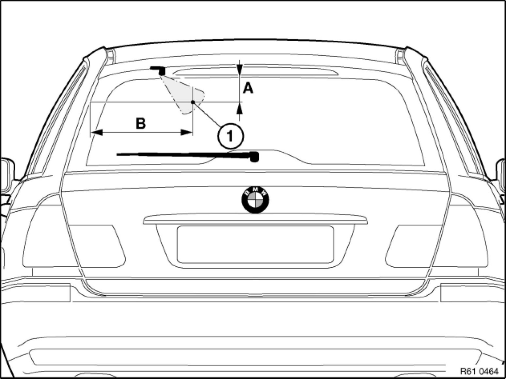
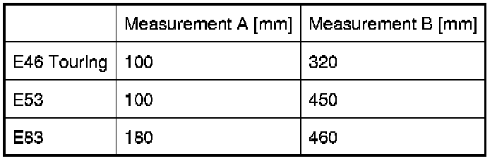
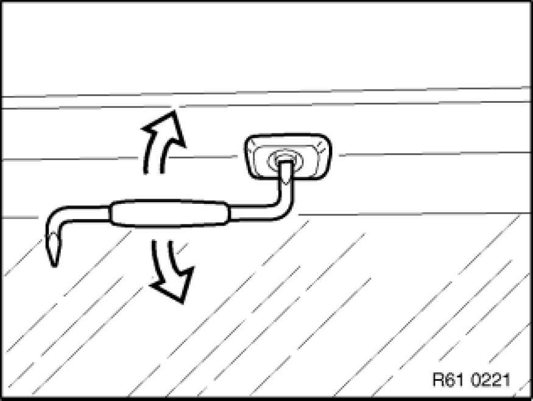

Windshield Washer Spray Nozzle: Adjustments
61 62 100 - Adjusting jet nozzle for rear window washer unit
Note:
The spray must meet the contact point (1).

Adjustment measurements:


Important!
Do not insert any pointed objects in nozzle (risk of damage).
Mark contact point with crepe tape. Adjust jet nozzle with offset screwdriver (3.5 mm) in slot.